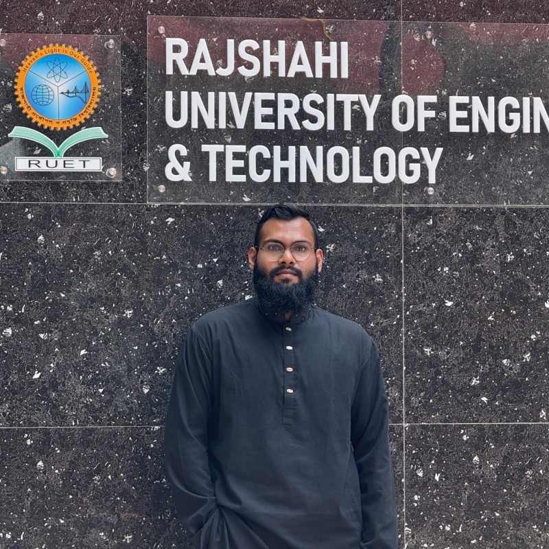

2025 — Running
M.Sc. in Applied Mathematics and Computational Science
North South University (NSU)
Dhaka, Bangladesh
Computer Engineering & Computational Science
Computer science researcher working on quantum computing, high-performance parallel computing (OpenMP, MPI, CUDA), and deep learning.

M.Sc. in Applied Mathematics and Computational Science
North South University (NSU)
Dhaka, Bangladesh
B.Sc. in Computer Science and Engineering
Rajshahi University of Engineering and Technology (RUET)
Rajshahi, Bangladesh
Higher Secondary Certificate (HSC)
Birshreshtha Noor Mohammad Public College
Dhaka, Bangladesh
Secondary School Certificate (SSC)
Power Development Board Secondary High School
Narayanganj, Bangladesh
Research Assistant
North South University (NSU)
Dhaka, Bangladesh
Conducting research and supporting active project development under Dr. Md. Sumon Hossain.
Guest Lecturer (Part-time)
Dept. of Computer Science and Engineering, Daffodil Institute of IT (DIIT)
Dhaka, Bangladesh
Taught the Computer Graphics course at DIIT, an institute under the National University curriculum.
Co-Founder & Chief Operating Officer
Niharon Technologies (closed)
Dhaka, Bangladesh
Founded a startup building tech-based educational and utility mobile apps. Oversaw day-to-day operations, ensuring seamless execution of business strategy and scalability.
A Hybrid Quantum-Chaos Theory Approach to Image Encryption Using Reservoir Computing
Quantum computers threaten RSA — this work pairs unbreakable E91 quantum key distribution with chaotic keys to encrypt images. A cipher generated via reservoir computing hides pixel data and resists decryption even if the QKD channel fails, securing against both quantum and classical attacks.
Brain Tumor Segmentation using U-Net Architecture
Academic project — built a pipeline for segmenting brain tumors from 3D MRI images using a U-Net.
TensorFlow · Python
EDA — House Prices: Advanced Regression Techniques
Exploratory analysis and preprocessing on a housing dataset: identified key price drivers, treated outliers, engineered features (log transforms, one-hot encoding) for predictive modeling.
Python · Pandas · NumPy · Matplotlib · Seaborn · Scikit-learn
Student Dropout Prediction using Neural Networks
Predictive model for student dropout risk from academic and financial data — data cleaning, linear-regression imputation, feature scaling, and a deep neural network reaching 93% train / 92% test accuracy.
Python · Pandas · Scikit-learn · TensorFlow · Matplotlib · Seaborn
Hand Gesture-Controlled Virtual Calculator
Touchless calculator controlled via webcam hand-gesture recognition.
Python · OpenCV
Python Package for Iterative Solvers using CUDA C++ running
A Python package wrapping CUDA C++ iterative solvers to accelerate large-scale linear algebra via GPU parallelism.
Python · CUDA C++ · pybind11 · CMake
Heterogeneous CPU-GPU Hybrid 3D Poisson Solver (CGLS) running
High-performance 3D Poisson equation solver in C++17 and CUDA using a matrix-free 7-point stencil and parallel GPU reductions to eliminate sparse matrix overhead — a 2.3× speedup on consumer hardware, plus an automated Python/VTK pipeline for profiling and 3D visualization.
C++17 · CUDA · VTK · Python
Languages
Tools & Libraries
Operating Systems
Network Simulation